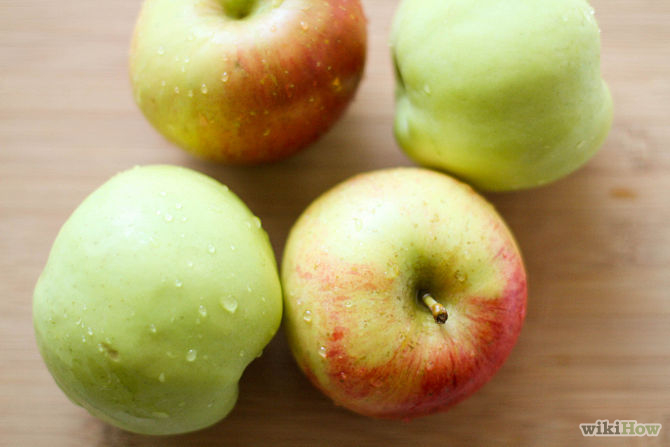
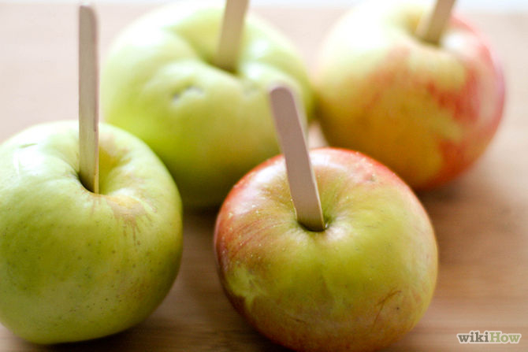
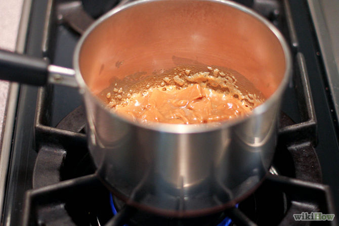
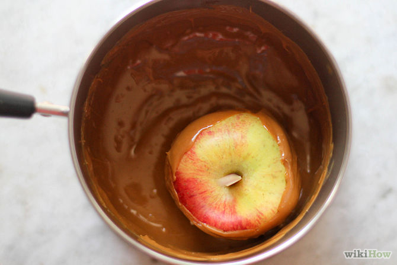
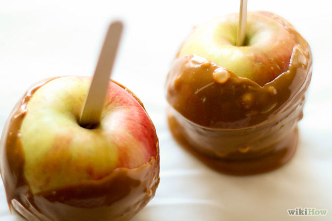
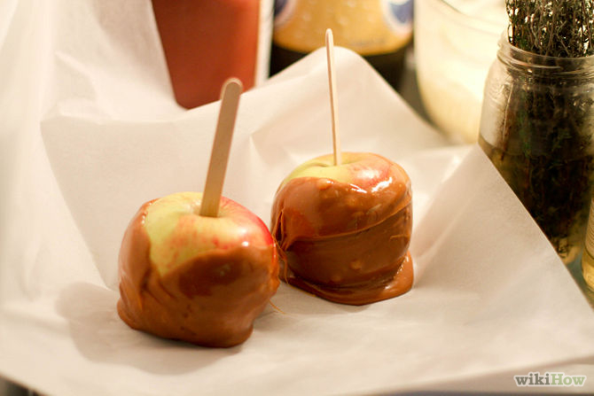
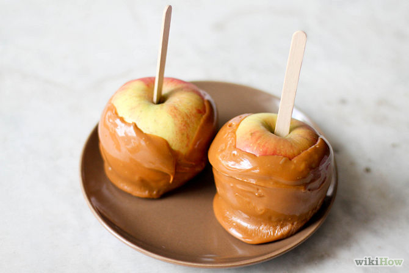

Caramel apples make a wonderful treat for Halloween and are quite easy to make. This recipe serves 4.

- Wash 4 apples thoroughly.

- Cut off the stems and insert the wooden sticks into the stem hole.

- Melt half a bag of caramel squares and add one tablespoon of milk in a small saucepan over a low heat, stirring constantly until smooth.

- Dip the apples into the hot caramel sauce, coating the apple completely.

- Place on greased wax paper.

- Store your caramel apples in the refrigerator for about 1-2 hours.

- You are finished!!!